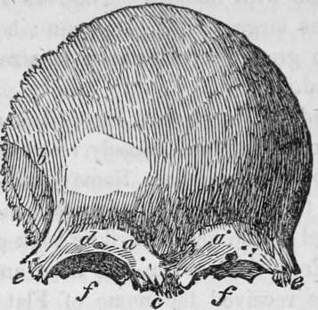

The Human Skeleton. Part 3
Description
This section is from the book "Human Physiology For The Use Of Elementary Schools", by Charles Alfred Lee. Also available from Amazon: Human Physiology, for the Use of Elementary Schools.
The Human Skeleton. Part 3
a, a, the coronal, suture, from the Latin corona, crown, so called from its situation on that part of the head, upon which the ancients placed the laurel, or olive crown, given to the victors in their games. It connects the frontal to the parietal bones; b, the sagittal suture, from a Latin word, signifying arrow, from its straight course. It runs from the middle of the frontal to the angle of the occipital bone, connecting the two parietals; c, the lambdoidal suture, extending from the sagittal suture down to the base of the brain on each side ; e, e, the scaly overlapping of the temporal upon the parietal bones; hence called squamous suture.
18. The frontal bone is one of the most important in the skull. It has been compared to a clam shell from its shape, and it forms the fore head, part of the temples, and the roof of the orbits of the eyes. Like the other bones, it is composed of two plates, which often recede from each other, immediately over the nose to a considerable distance, leaving a space between them called the frontal sinuses. These cavities communicate with the nose, and are supposed to increase the intensity of the sound of the voice, and also to render it more melodious. The change of voice, observable in a person affected with a cold, is owing to a closure of the passage between the nose and cavity, preventing the access of the sound to this reverberating sinus. Snuff taking, it has been supposed, injures the voice by obstructing this canal.
A front view of the frontal bone ; a, a, frontal sinuses ; 6, the tem poral arch, beneath which lies the temporal muscle, which closes the lower jaw ; d, the supra orbitary hole for a psssage of a branch of the fifth pair of nerves.
19. The shape of the head, as welLas its size, varies great ly in different individuals. There are also national peculiarities in the form of the head, constituting a well marked national feature. Thus the Caucasian race, to whom we belong, is distinguished by the beautiful oval form of the head. To this race the most civilized nations belong, and those which have ruled over the others. The Mongolian race, which inhabits China and Japan, is known by its prominent cheek bones, flat face, narrow and oblique eyes, straight and black hair, thin beard, and olive complexion.
20. The negro race has a compressed skull, and a flattened nose, a prominent mouth, and thick lips; thus bearing some resemblance in features to the monkey tribe. The North American Indian has a very singular shaped head ; it being high from the ear upward, and short from the front to the back. The fore head is not as largely developed as in the Caucasian. The head of the Hindoo is much smaller than that of the European, while that of the New-Hollander is but little superior to that of the ourang outang, who roams the same forests with himself. The New Zealanders have heads nearly as large as the European ; but the fore head is low, and the great preponderance of size is in the back part of the head.
21. The heads of the ancient Egyptians, as appears from an examination of mummies, closely resembled in shape and size those of modern Europeans. Some of our North American Indians are in the habit of flattening their heads by binding a piece of board on the fore as well as back part of the head, in infancy. From this custom, one tribe among the Rocky Mountains, has received the name of Flat Head Indians. The Choctaw tribe were formerly in the habit of flattening their heads in the same way ; but for some years past, they have discontinued the practice. The heads of the different European nations differ somewhat from each other; but a common type characterizes them all.
22. Not only the size, but the texture of skulls among dif ferent nations varies. The grain of the New Holland skulls is extremely rough and coarse; that of the Hindoos, fine, smooth, and compact, more closely resembling ivory. The Swiss skulls are open and soft in the grain, while the Greek are closer, and finer. It has been suggested that there may possibly be a corresponding quality of brain in the individuals, which may influence the mental, and consequently the national character. This difference is generally attributed to the effects of temperament.
23. The bones of the cranium increase in extent, thickness, and weight, from the commencement till the termination of their development in adult age ; but after this time, and till old age, they always diminish in these three relations. In advanced life, we often find them reduced to a mere shell, and perhaps perforated in some places. They thus become much lighter than in middle life. Meckel found the skull of a female, seventy years of age, weigh but fourteen ounces, while that of a girl, twenty years of age, weighed twenty four ounces. In the early periods of life, the whole form of the head is much rounder than at an advanced age ; owing, perhaps, to the small development of the face, which the skull envelopes in every direction.
24. The size of the cavity formed by the bones of the skull, is always proportional to the size of the organs it lodges and protects. The shape and size of the cranium depend on the brain, and not of the brain on the cranium. The soft parts model and adapt to themselves the hard, and not the hard, the soft. The brain is formed before the case which contains it, and it is not till after several years that the bones of the cranium become perfectly consolidated. In a child of ten years of age, afflicted with dropsy in the head from infancy, and which was exhibited a year or two since in this city as a great curiosity, although the head measured thirty two inches in circumference above the ears, yet nearly the whole surface was protected by a bony covering.
25 The Spine.-However admirably the skull may appear to be adapted to the objects for which it was obviously designed, the spine exhibits no less evidence of wisdom and skill in the divine Architect. In addition to the firmness which was required in the joinings of the bones of the cranium, a new principle is now introduced, viz. the attainment of mobility or pliancy. The spinal column indeed serves three important purposes ; it is the great bond of union between all the parts of the skeleton ; it forms a tube for the safe lodgment of the spinal marrow ; and lastly, it is a pillar to sustain the head.
Continue to:
Tags
humans, anatomy, skeleton, bones, physiology, organs, nerves, brain